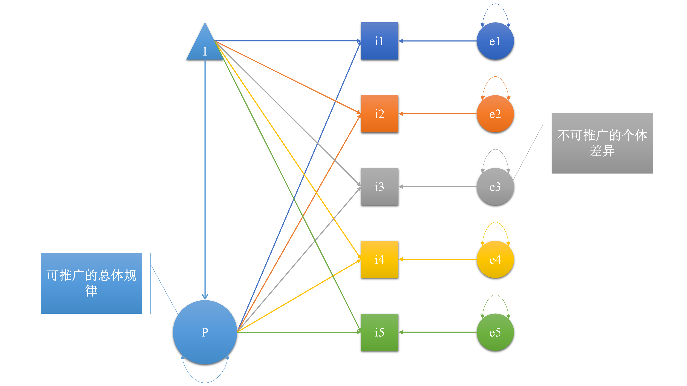

本作品采用知识共享署名 4.0 国际许可协议进行许可。
我之前做了一项小的调查，调查内容在文章最后。名义上，这个小调查是在调查研究者的研究偏好；实际上，这个小调查是在调查研究者的哲学取向。科学研究，包括量化研究或质性研究，背后的哲学思想主要围绕着三个论点展开论述：本体论，认识论，价值论。这三个概念很拗口、很吓人。我们可以简单将其理解为：
在文后的调查中，1-3题反映的是本体论，4-6题反映的是认识论，7-9题反映的是价值论。10-14反映的是科研成果的呈现方式。通过审视自己在该调查上的得分，你或许可以进一步认清自己的哲学取向。
对于一心做量化研究或质性研究的同学而言，科学研究的哲学取向或许并不是一个问题；但当我们不得不在量化研究和质性研究之间做选择时，哲学取向就变成了一个关键问题。有时候，我们也会发生关于量化研究和质性研究的争执，争了半天，很激烈，却没有争出什么结果，只是感觉双方仿佛不是生活在一个世界、没有在同一个频段上对话。这到底是为什么呢？这是因为你们确实生活在不同的世界。
量化研究与质性研究索争执的焦点，我认为最本质的一条，也是本文主要想要交流的一条，就是“世界的本质是什么？”换句话说：事实是唯一的还是多样的？再换句话说：事实是客观的还是主观的？如果事实是客观的，那它就是唯一的，如果事实是主观的，那它就是多样的。你可能会说：事实如果是主观的还能算得上是事实吗？！你说得有道理。
另外一个相关的问题是：我们想要的研究结果是什么样的？我们想要得到可以推广到一般情况的结论，还是想得到能最充分地反映单个研究对象的结论？如果我们认为事实是客观的，那么我们通常会追求一般性的、可推广的研究结论；如果我们认为事实是主观的，那么我们就不会苛求自己的研究结果具有可推广性。关于本体论的争论可以用下图来说明：  在上图中，5个正方形表示5个人，这是我们调查的样本。圆形表示影响因素。5个颜色不一样的小圆表示影响个体的独特因素。大圆表示影响个体的一般因素。在量化研究中，我们希望通过调查样本来推断一般规律，实际上我们想要得到的研究结果就是上图中的大圆。而在质性研究中，我们希望通过调查个体来了解影响个体的独特因素，实际上我们想要得到的研究结果主要是那个小圆。（三角形表示均值，这里不做讨论。）
举例而言，我们想要了解人们使用XX手机的原因是什么，这对于提高XX手机的销售额非常重要。我们可能发现一般性的规律，即XX手机的质量是影响人们购买行为的原因，我们说这个因素对大部分人都适用，这个规律在一般情况下都适用，我们也说这个结果是可推广的，如果一个小伙买了一部XX手机，我们可以推测他购买XX手机的原因是他相信华为手机的质量好。XX公司了解了这个一般规律之后，就开始努力提高XX手机的质量。但是有些人使用或者拒绝使用XX手机的原因是非常独特的。比如有些人的XX手机是抽奖抽到的。XX公司就想：要不要多搞几个抽奖活动呢？最后决定：还是算了吧，还是努力提高手机质量吧。
你可能会说：这还用问么？老师不一直告诉我们“要提高研究结果的可推广性”？但确实有一些情境，我们需要的不是一般性的、可推广的研究结论，我们想要的是独特的、仅适用于特定对象的研究结论。比如，在个体心理咨询中，我们的目的是全面了解来访者，并制定个性化的、能更好地帮助她的咨询方案。我想，这就是个案研究的应有之意吧。再举例而言，我们想要了解如何提高留守儿童的学习成绩。经过前人的研究，我们了解到：一般而言，请家教可以有效提高学生的成绩。据此，我们可以建议：既然父母不在家，就请个家教吧， 多看书，多做题……
需要注意的是，我们不能把量化研究等同于“客观”，不能将质性研究等同于“主观”。关键在于：对于我们的研究而言，我们想要得到的是一般性的、客观的、可推广的结论，还是想要得到特异性的、主观的、能最好地服务于特定研究对象（而不是可推广）的结论。
调查
你在多大程度上同意下列表述？请从1-6六个选项中选出最符合你实际情况的选项。
1=完全不同意，2=很不同意，3=不同意，4=同意，5=很同意，6=完全同意
不论什么现象，其背后的现实(reality)或事实(truth)只有一个。（例如，“爱情是什么？”）
一种现象背后存在多种事实；但是某些事实比其他事实更突出。（例如，“爱情是什么？”）
事实并不存在，因为存在多种同等有效的事实。（例如，“爱情是什么？”）
我们对概念的了解是有限的。（例如，“爱情是什么？”）
知识是无限的。（例如，“爱情是什么？”）
知识在社会互动（例如，研究者与研究对象的互动）中变化。
研究者应将自身的价值观与研究设计相结合。
研究设计应将研究对象的价值观考虑在内。
研究者的主观性是质性研究的重要财富。
以研究者的视角报告研究结果是不合适的（例如，“研究者发现爱情包含三种成分……”）。
以研究对象的视角报告研究结果是不合适的（例如，“王女士说：‘我觉得爱情就是利益交换……’”）。
相较于呈现被试的故事和叙述，以数字的形式呈现数据更有价值。
研究设计的选择应基于研究范式和传统。
研究方法应由研究问题所驱动，而不是反过来。（即，应先提出研究问题，再根据研究问题选择研究方法。）
参考文献
Hays, D. G., & Singh, A. A. (2011). Qualitative inquiry in clinical and educational settings. Guilford Press
本作品采用知识共享署名 4.0 国际许可协议进行许可。